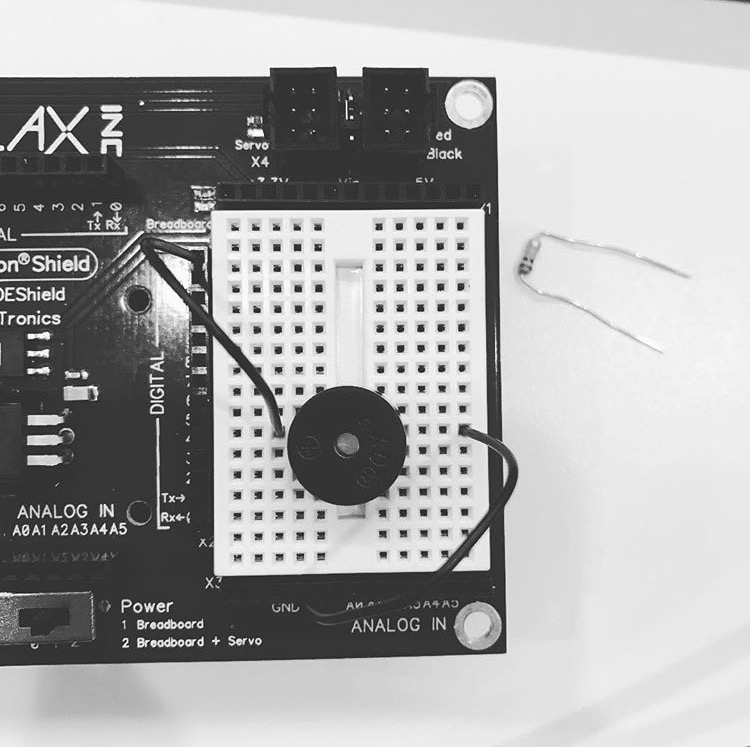
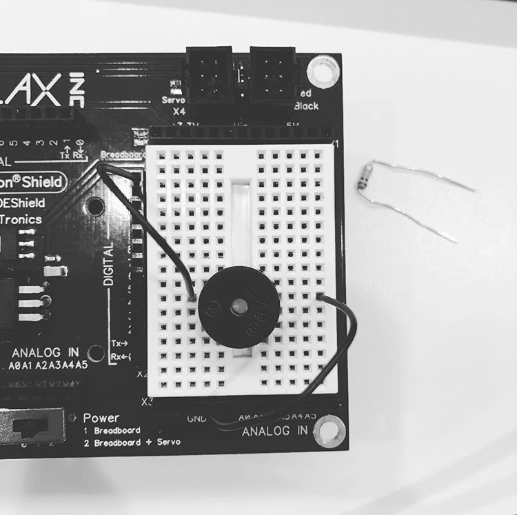

.png) 

.png)
27 June, 2017
What are some similarities and differences between Scratch and Python?
I do find the two too be quite simularities to be honest. They use simular logic to solve problems and both are very dependant on boolean logic. However, Python's more dependant on the written word than Scratch and the language is a bit more complicated and much more strict in the lanuge if we're being honest.
You debugged code today, how did that feel? What did you like? What didn't you like?
I honestly liked it. It was a lot like working with a logic puzzle, and because of that it was pretty damn enjoyable to be working with. I liked how everything made sense when you coded with it. However, parts of it required an ornate attention to detail, and the coma's making even a difference was kind of difficult to be very honest.
6 July, 2017
What does Manuela Veluso's work have in common with Anyanna Howard's?
I feel like they are both working to better help others in the work place. I also find the fact that they're so innovative and eager a big simularity between the two of them. They're both so egar to help and make things better which is absolutely amazing.
You debugged code today, how did that feel? What did you like? What didn't you like?
I honestly liked it. It was a lot like working with a logic puzzle, and because of that it was pretty damn enjoyable to be working with. I liked how everything made sense when you coded with it. However, parts of it required an ornate attention to detail, and the coma's making even a difference was kind of difficult to be very honest.
5 July, 2017
Picture of your circut and a description of what you learned your idea/definition of robots change as we discussed it in class?
This is a picture of a circut board I helped to create today, we wired up a piezo, which buzzed and made noise. Today my definition of a robot quite opened up to be honest, it became a bit more broad, but at the same time it restricted and I learned what could and could not be defined as a robot.
What mades you excited/nervous about the future of robotics?
I'm excited for how quickly we're progressing and I find that fascinating. I would love to be on the forefront of all of that to be quite honest. But I think that the fact that we are progressing that fast is a bit scary if we're being truthful, especially since we often fail to place checks in place to check that our power isn't going out of control.
How did your group today work compared to other groups? What worked better? What could be better next time?
I think that today we worked excellently to be quite honest. Compared to other groups I felt that we might've been all at a very different learning rate than each other which I feel made certian parts of it really hard. But I feel that we understood where others were having trouble and struggling with at certain times. So next time I think trying to slow down or find some sort of middle ground would be good.